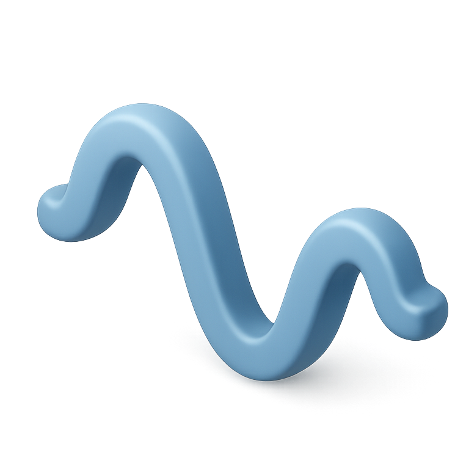
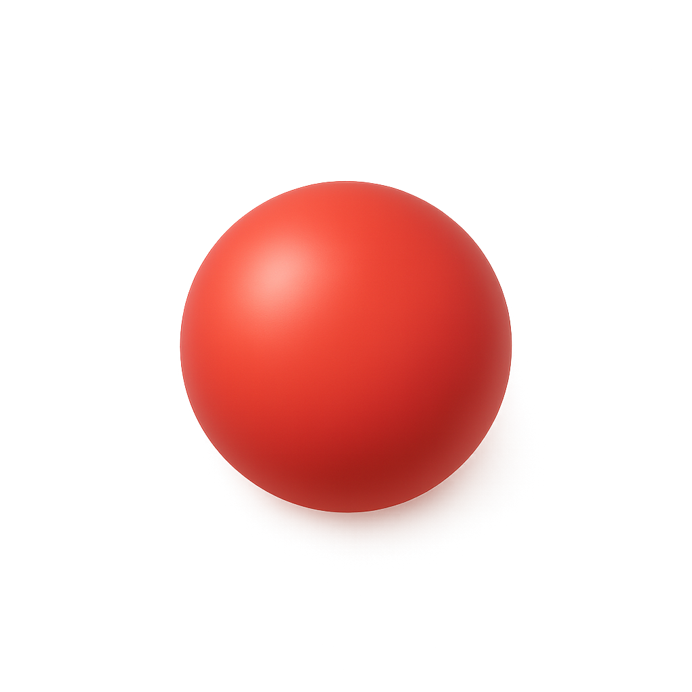

py.Aroma
A free, open-source toolkit for diverse aromaticity analysis, all behind an intuitive graphical interface.
🏕️ home/ ⬇️ download/ 📄 manual/ 🐞 issues/ 💎 citations/ ⚖️ license

py.Aroma 5 is a free, open-source program toolkit for aromaticity analysis. Optional functionalities for plotting NMR spectra, a computational supporting-information generator, and geometry operations are integrated.
What it does



Built with
Released under the CC BY-NC-SA 4.0 license. Known issues in the latest version are summarized on the issues page. For a Chinese-language introduction, see 计算化学公社 🔗.
How to cite
If py.Aroma 5 is used in your work, or the code is incorporated into your own, please consider citing:
Contributors
py.Aroma 5 is developed by Zhe WANG (The University of Osaka), with contributions from Takuma MIYAMURA (Uni zu Köln) and Takumi SHIOKAWA (Kyoto University). See the ABOUT page in the program for details.
Statements
Feedback and bug reports are welcome, contact ZW via e-mail or the Contact Developer button in the program's start-up window.
py.Aroma 5 is distributed in the hope that it will be useful, but WITHOUT ANY WARRANTY; without even the implied warranty of MERCHANTABILITY or FITNESS FOR A PARTICULAR PURPOSE.